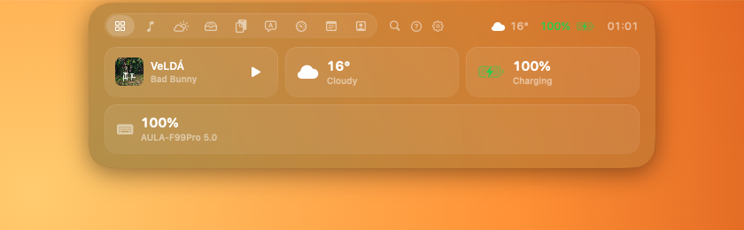
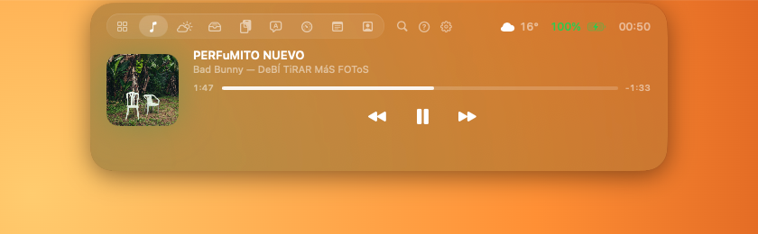
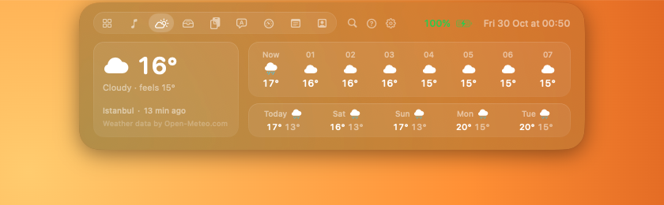
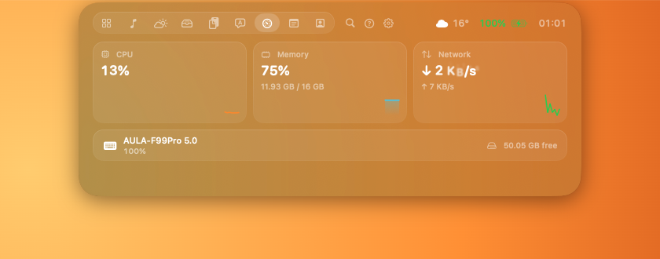
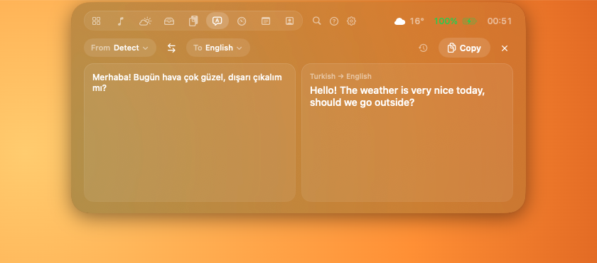
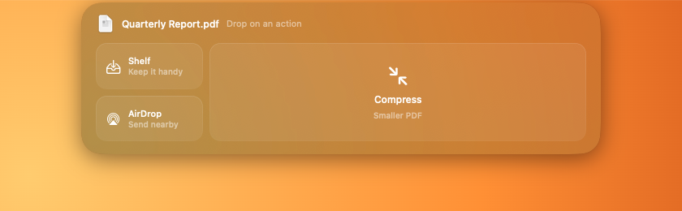
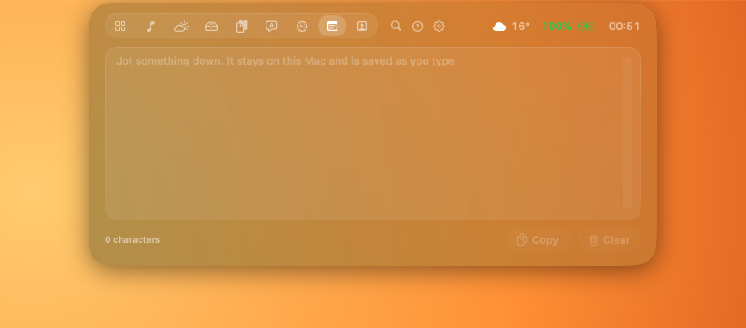
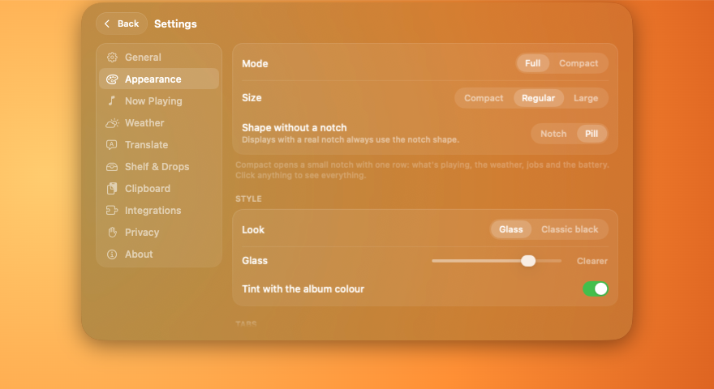
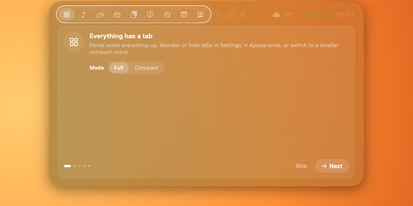

Your notch,
doing something useful.
NotchOne shows what's playing, the weather, your devices, files and running jobs right in the MacBook notch. Free, with no accounts and no tracking.
Download for macOSmacOS 26 or later. Signed and notarized by Apple. Updates itself, or not, as you choose.

What's inside
Home
Music, weather, battery, devices and jobs at a glance. A compact mode keeps it to one row.
Now Playing
Music, Spotify and browsers, with controls and the album colour.
Shelf & drops
Drop files on the notch to keep them, AirDrop them, or convert and compress images and PDFs.
Translate
⌃⌥T translates the selection in any app, on-device with Apple's models.
Search
⌃⌥K looks through your clipboard, shelf and tabs.
System & devices
CPU, memory and network at a glance, and the battery of your AirPods, keyboard and mouse.
Notes
A quick scratchpad in the notch that saves as you type and stays on your Mac.
Claude Code
A notification in the notch when Claude needs you or finishes. Click it to jump to the session.
See it in the notch











Private by design
No servers of our own, no accounts, no analytics and no third-party code. The weather gets your area rounded to about 1 km; everything else stays on your Mac. Read the privacy policy.